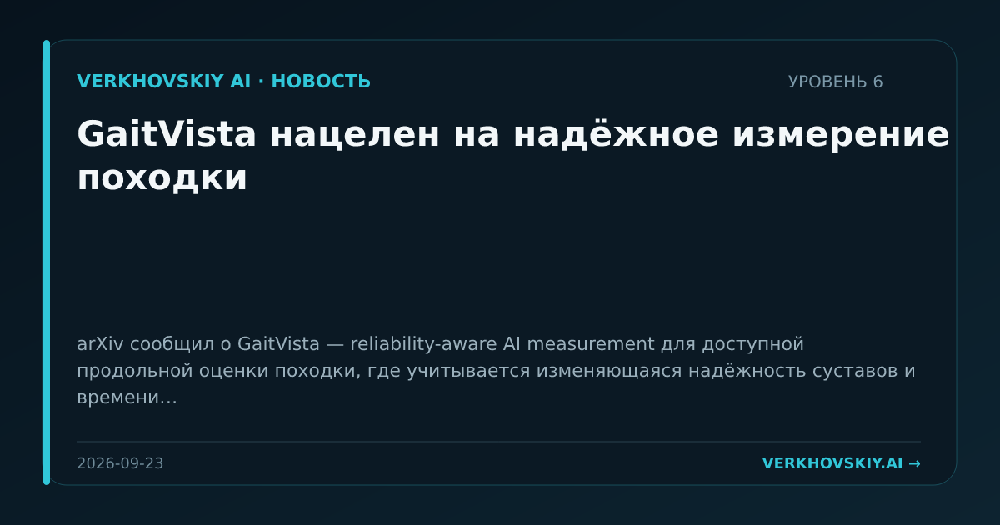

GaitVista нацелен на надёжное измерение походки
arXiv сообщил о GaitVista — reliability-aware AI measurement для доступной продольной оценки походки, где учитывается изменяющаяся надёжность суставов и времени. Почему это важно: Медицинские измерительные AI-системы должны отличать клиническое изменение от сбоя сенсоров. Это усиливает роль калибровки и доверительности в прикладном AI.